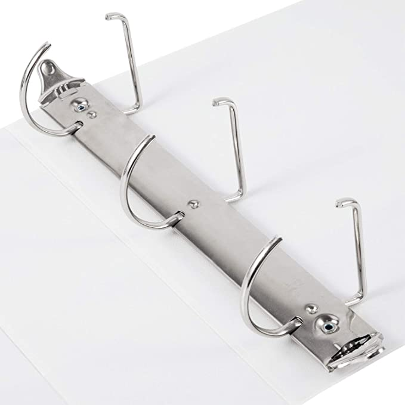
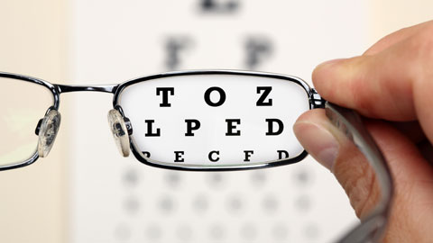
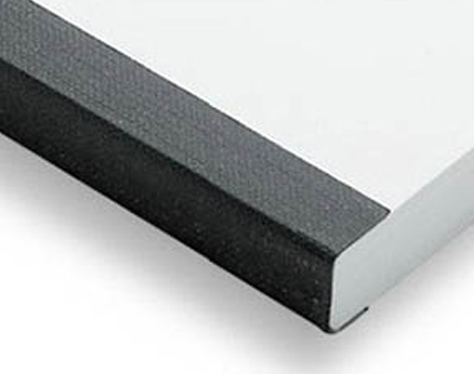
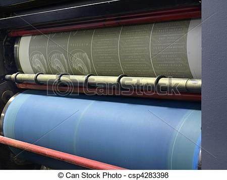
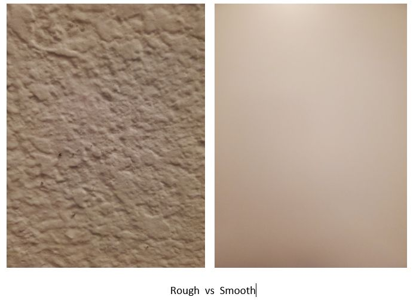
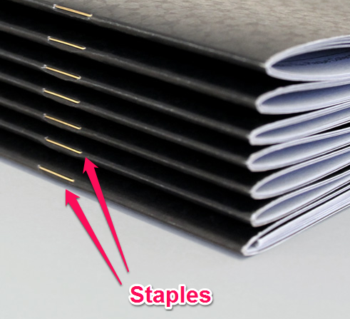
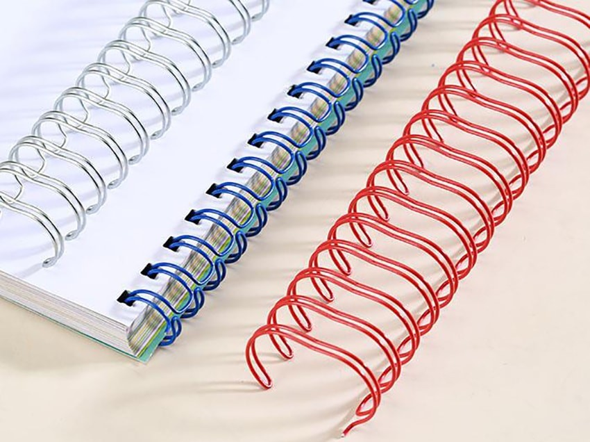

1 Bases de données
1.1 Vocabulaire
| Français | English |
|---|---|
| actuel | current |
| aléatoire | random |
| a sample | un échantillon |
| célèbre | famous |
| couper | to trim |
| d’après, selon | according to |
| dépenser | to spend |
| du tissu | fabric |
| empêcher | to prevent |
| en cours, en déroulement | ongoing |
| engager, embaucher | to hire |
| épais | thick |
| épineux, délicat | tricky |
| finir par… | to end up doing… |
| fournir | to provide |
| la maquette, la disposition | the layout |
| le dos d’un livre | the spine |
| lisse, doux | smooth |
| mettre à jour | to update |
| once | une fois que |
| PAO | desktop publishing |
| par exemple | for instance |
| parfait, sans failles | faultless |
| peser | to weigh |
| planifier | to schedule |
| plier | to fold |
| rendre, donner | to hand out |
| réunir | to gather |
| rugueux | rough |
| s’assurer de qqch | to ensure |
| tôt | early |
| très long | lengthy |
| un diplôme | a degree |
| un domaine | a field |
| une approbation, un accord | an approval |
| un échantillon | a sample |
| une commande | an order |
| une compétence | a skill |
| une échéance | a deadline |
| une forme | a shape |
| une publicité, une annonce | an ad |
| une réunion | a meeting |
| une séance photo | a photo shoot |
| un métier | a trade |
| vérifier | to check |
1.2 Définitions
| Expression | Definition |
|---|---|
| Brightness | how light reflects off the paper. Some papers contain fluorescents so they appear brighter. This makes the paper sparkle more, but can affect the color of printed images. |
| Fastback binding | uses a cloth or paper strip wrapped around the spine of the pages and then glued in position. |
| Lay-flat binding | gathers all the signatures together and grinds the spine as in perfect binding. Th e cover is then glued to the book at each side of the spine, which allows the pages of the book to lay flat when opened. |
| Opacity | refers to how much the text or images printed on the other side of the page show through. |
| Paper coating | How smooth the surface of the paper feels. The degree of smoothness is created during the paper-making process. |
| Paper color | Most paper is white. However, there are hundreds of different shades of white. Some whites are very warm, almost yellow. Others are cool, almost blue or gray. |
| Paper weight | Paper is graded according to its weight — which is usually expressed in terms of how much 500 sheets of the paper in its standard size weighs. |
| Perfect binding | gathers all the signatures together. The spine is then ground to create a fl at edge, and a paper cover is glued around the spine. |
| Plastic comb binding | uses a plastic insert with teeth that fit into rectangular holes in the paper. |
| Saddle-stitch binding | uses two or more staples inserted right at the fold of the paper. |
| Side-stitch binding | combines all the signatures and the cover and stitches them together with staples on the outside of the book cover. |
| Spiral binding | uses a metal or plastic spiral that coils through many small holes on the side of the paper. |
| Strength | how well the paper holds up under stress. Paper bags and envelopes need a high degree of strength. |
| Thickness | Thick papers don’t have to weigh a lot. Some books are printed on very thick but lightweight paper, which makes the book look like it has more pages. |
| Three-ring binding | uses three punched holes in the paper and a three-ring binder. |
| Velo binding | uses two plastic strips on either side of the document. The strips are held together with plastic pins and bound together with heat. |
| Wir-O binding | similar to spiral binding, but instead of a single spiral, two wire teeth fit into rectangular holes in the paper. |
1.3 Traductions
| Français | English |
|---|---|
| Avec qui as-tu partagé ce dossier ? | Who did you share this file with? |
| Je marchais dans la forêt quand nous avons entendu un énorme bang | I was walking in the forest when I heard a loud bang. |
| Les collègues avec lesquels j’ai travaillé l’année dernière étaient souvent en retard… | The colleagues I worked with were often late. |
| Les étudiants attendent les résultats dont dépend leur avenir. | The students are waiting for the results their future depends on. |
| Les tâches dont je suis responsable dans l’entreprise sont un peu ennuyeuses… | The tasks I’m responsible for in the company are a bit boring. |
| Le tableau que tu regardes est en fait un faux. | The painting you are looking at is actually fake. |
| Où ai-je mis le document qu’on m’a donné hier ? | Where did I put the document I was given yesterday? |
1.4 Prononciation
| Word | Sounds | Stress | Received Pronunciation | General American |
|---|---|---|---|---|
| approval | /010/ | /ə.’pruːv.əl/ | /ə.’pruːv.əl/ | |
| deadline | /10/ | /’ded.laɪn/ | /’ded.ˌlaɪn/ | |
| early | /10/ | /’ɜːl.i/ | /’3r ːl.i/ | |
| lengthy | /10/ | /’leŋθ.i/ | /’leŋθ.i/ | |
| once | /1/ | /wʌns/ | /wʌns/ | |
| receive | /01/ | /ri.’siːv/ | /ri.’siːv/ | |
| rough | /1/ | /rʌf/ | /rʌf/ | |
| schedule | /10/ | /’ʃed.juːl/ | /’ʃed.juːl/ | |
| signature | /100/ | /’sɪg.nətʃ.ə/ | /’sɪg.nətʃ.ər/ | |
| smooth | /1/ | /smuːð/ | /smuːð/ |
1.5 Travail à faire
| Échéances | Description | Jours restants |
|---|---|---|
| 23/03/2021 | Rendre les travaux | -166 |
| 06/09/2021 | Dans un premier temps il s’agit de rendre un mémoire hyper précis sur ce que l’on aimerait rechercher. | 1 |
| 15/09/2021 | Il faut y aller! | 10 |
| 23/10/2021 | talk to me | 48 |
| 22/11/2021 | cancel request | 78 |
| 23/02/2022 | Se dépêcher | 171 |
| 23/03/2022 | Rendre les travaux | 199 |
1.6 Flashcards
| Images | Expressions |
|---|---|

|
a folded edge |
| a misprint | |
| a schedule | |
|  | a three ring binder |
| an ad in the street | |
| blank pages | |
| desktop publishing | |
|  | eye sight |
| fabrics | |
|  | fastback binding |
| lay flat binding | |
|  | offset plates |

|
plastic comb binding |
|  | rough and smooth textures |
|  | saddle stitch binding |
| side stitch binding | |
| spiral binding | |

|
the spines of books |
| to weigh | |
|  | wirO binding |